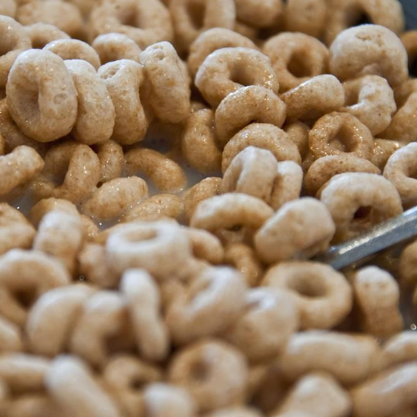

Good ol' CerealCereal is a pillar of the food community. From children's breakfast, a teenager's snack, to an adults depression meal at 3am because they've lost control of their lives and all that can comfort them is a cold bowl of whatever cereal they remembered to buy the last time they went shopping. Here's a recipe to soothe that anguish or have a hardy breakfast in the morning!